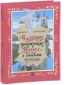

Поистине мировую славу шведской писательнице и лауреату Нобелевской премии по литературе Сельме Лагерлёф принесла сказочная повесть "Чудесное путешествие Нильса с дикими гусями", написанная как двухтомный учебник по географии для школьников. Оказалось, что текст того издания далеко выходит за рамки учебного пособия, являя собой великолепное сочетание захватывающей сказки про мальчика Нильса, превратившегося в крошечного человечка, и широкой исторической и географической панорамы Швеции. В издании использован классический пересказЗ.Задунайской и А.Любарской, стихи в переводе С.Маршака. Иллюстрации Э.Булатова и О.Васильева.Для младшего школьного возраста.